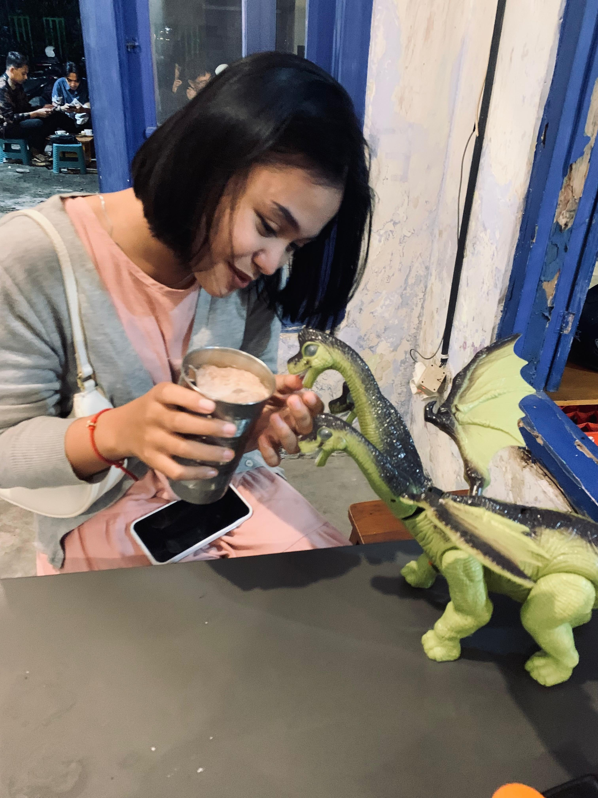
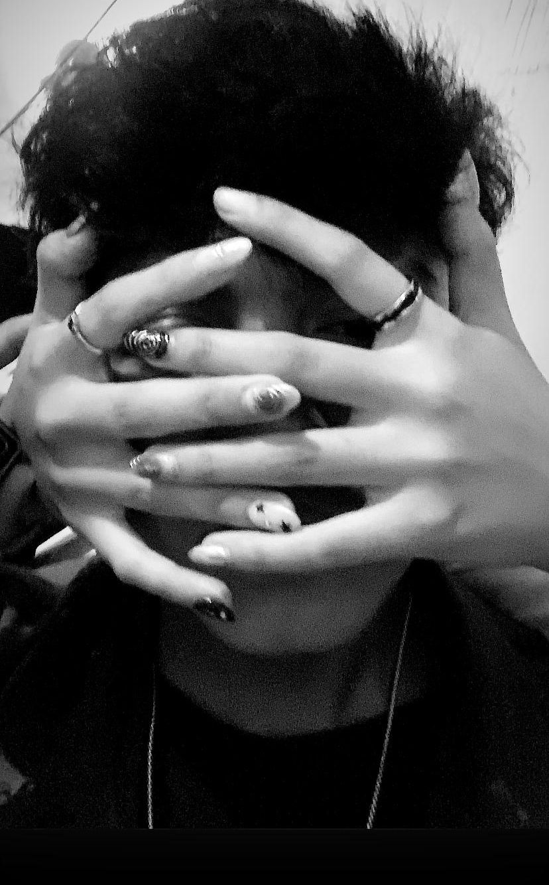

📸 Foto Bersama
Kamu inget passs ini gaa?
yapssss inii kitaa pass baruu mauu dekett lagiiii duluuu taukkkk,
dannn pass ituu kamuu lagi beliin hadiahh buatt kadooo sii bocilll ituuuu
iniii kitaa foto" lagii darii sekian lamanya tidaa bertemuuu hahahhahahahahahb
(meskipun bentar)
dann btw akuu sukaa bangett rambut tiass pass inii,lucuuu bagettt bawaanyaaaa
dannn inii firstt difotoinn tiasss,dann di postt tiass jugaaa
("dann pas kamu postt fotoo ini jujur akuu seneng bangett hahahahaha")
iniii aku nemeninn kamuuu belii mamm waktu ituuu,
dann ikutt kamu beli sosinya bukk diniiii,
oiyaa aku belum nanyaa, enakk ga sosisnyaa buk dinii?
iniii passs kitaaa ke acara batik di smadaa yaa?
ingett gaa pass kamu susah banget diajak masuk kedalem?
sampeee aku harus bujuk" bangett biar mau hahahaha
iniiii fotoo menurut akuu bagusss lucuuuuu,tapiii
sedihnyaa pas aku post kamu gamau repostt..
syedihh dikit waktu itu hahahaha
pass kamu kasiii kuee buatt adik akuu,disituu akuuu terharuuu bangett aslinyaaa
terharu kenapa?terharu karena kamuu ingett jugaa ke keluargakuu:(
disiniii kamuu lucuu bangett pakee bungaa yang akuu petikkkk,
meskipunn akuu petik punya orangg hahahaha
meskipunn cumann foto" sepertii iniii, inii meurutkuu baguss dan gaada yang jelekk,
semuaa fotoo yang ada kamu menurutkuu ituu selalu bagusssss :)
iniii first time kita nontonn yaaa?
dann kita nontonnya waktu itu kitaa gaada hubungan apa" cumannn dekett,
jadinyaaa antara aku dan kamuu masiii canggung buat jadii diri sendiri kwkwkwk
iniiiii jugaaa lucuu bangett,kamuu tatoinn akuuuuu pake hena"an
dann aku kagett kamuuu tatoin 69 (emot tangan fuck hahahaha)
tapiiii aku kasii binang 4.5 kanaaa lucuuu yang kamu tatoinn
disiniii dipikir" akuu sedihhh,akuu cumann kasii bungaaa sepertii iniiii
maafff yaaaaa cumannn kasiiii sepertii ituu bunganyaaaa
iniiii fotooo lucuuu,cumannn akuu masii tetep kaku buatt pelukk kamuu waktu itu hehehehe

disiniii akuuu baruu ngerasaa,akuu baruu ngerasa juga kaloo kemarin"nya akuu salahh,
aku salah kaloo ketemu sama kamu,ketemunyaa ga cuman berdua doang sama kamuu,
disinii aku bener" ngerasa nyamann,ngerasaa tenangg,semuaa capeeku ilangg pass samaa kamuuuuu:(
dannn disiniii akuu bener" senenggg,bener" seneng kamuu mulaii jadii dirimuu sendirii,
bahkann aku ngerasaa kedepannya bisaaaa seneng" kek gituu teruss,
alhasill duniaa belummmm kasii ituu
diinget" fotoo diatasss ternyata uda ga kerasaa yaa sampee sekaranggg,
ingett ga dulu pas first kita nongs?
kitaa susahh buatt ngomong",dann kita gaada se frekuensi"nya sama sekalii hehehe
dann yapss disini aku bener" mauu nangisss...
bener" terharuuu,ternyataa ada jugaa orang lain yang inget ultahku selainn keluargakuuuu,
bener" senengg karnaa first time dirayakann sama pacarrrkuuu:)
dann damnnn...
seperti inii terakhir kitaa seneng",
terakhir kita ketawa barenggg?
🎞️videoo lucuu kitaa
jujurr sedihh bangetttt,
perjuangan kita dari dulu bener" sampee sini yaa?
maaf yaa bener" mintaa maaff kaloo selamaa akuu, akuu gabisa kasii apa apaa buat kamuu,
maaff kaloo usahakuu selama inii gaada apa"nya ketimbang usaha & effort kamuuu,
maaff kalo akuu seringg nyakitin kamuuu,
maaff kalo akuu belum bisa kasi feedback buatt kamuu
AND REMEMBER!!
I WILL ALWAYS LOVE YOU, AND I WILL KEEP LOVING YOU LIKE THE SONG YOU'RE LISTENING TO RIGHT NOW,
I LOVE YOU MORE THAN I LOVE MYSELF.